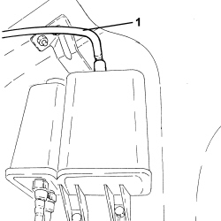
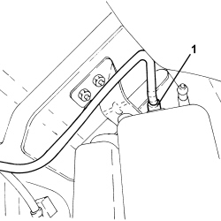
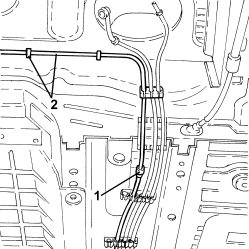

1080E61 FUEL VAPOUR PIPE FROM VAPOUR FILTER TO INTERMEDIATE COUPLING - R.R.
- Path
- Procedures > 10 ENGINE > 1080 EMISSION CONTROL SYSTEM > 1080E EVAPORATION CONTROL SYSTEM > 1080E61 FUEL VAPOUR PIPE FROM VAPOUR FILTER TO INTERMEDIATE COUPLING - R.R.
- Kind
- repair procedure (removal / refitting; the operation number is the code)
- Applies to
- engines: 1.9 JTS, 2.2 JTS, 3.2 JTS; all production periods
- Interactive page
- https://sloeber94.github.io/elrnDB/#/939010632
Applies to: engines: 1.9 JTS, 2.2 JTS; all production periods
 Removing
Removing
 Refitting
Refitting
Applies to: engines: 1.9 JTS, 2.2 JTS; all production periods

Applies to: engines: 3.2 JTS; all production periods
Removing
RefittingOp. 4450B13 REAR WHEELS (TWO) - R.R
Op. 2720C10 DIFFERENCIAL UNIT - R.R.
Op. 2410A18 TRANSMISSION WITH JOINTS INCLUDED - R.R.
Op. 7050A20 ONE-PIECE REAR SEAT CUSHION - R.R.
Op. 1040A10 FUEL TANK - R + R AND DECANT FUEL
Op. 1040E22 FUEL PIPE PROTECTION - R.R
Op. 7055B44 LEFT REAR WHEEL ARCH LINER - R.R
1. Disconnect the rear rapid connector for the fuel vapour pipe.

Applies to: engines: 3.2 JTS; all production periods
1. Disconnect the front rapid connector for the fuel vapour pipe.
2. Disconnect the fuel vapour pipe from the fastenings on the bodyshell and remove it.

Applies to: engines: 3.2 JTS; all production periods
Refitting
Removing- Place the fuel vapour pipe in its housing and secure it to the bodyshell using the fastenings.
- Connect the rapid connectors for the fuel vapour pipe to the vapour filter and to the intermediate pipe.
Op. 7055B44 LEFT REAR WHEEL ARCH LINER - R.R
Op. 1040E22 FUEL PIPE PROTECTION - R.R
Op. 1040A10 FUEL TANK - R + R AND DECANT FUEL
Op. 7050A20 ONE-PIECE REAR SEAT CUSHION - R.R.
Op. 2410A18 TRANSMISSION WITH JOINTS INCLUDED - R.R.